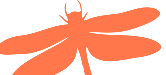
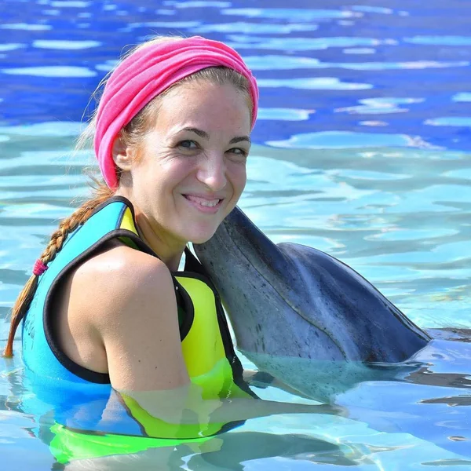
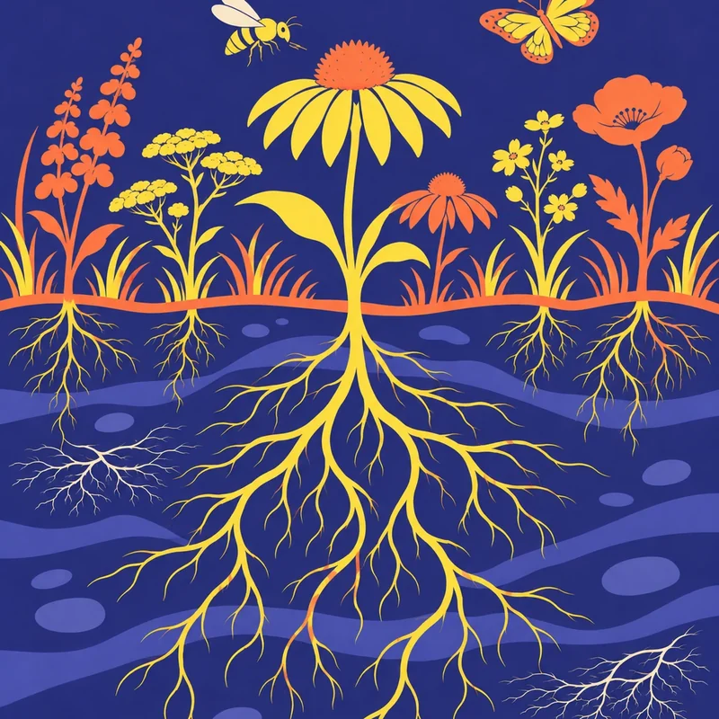
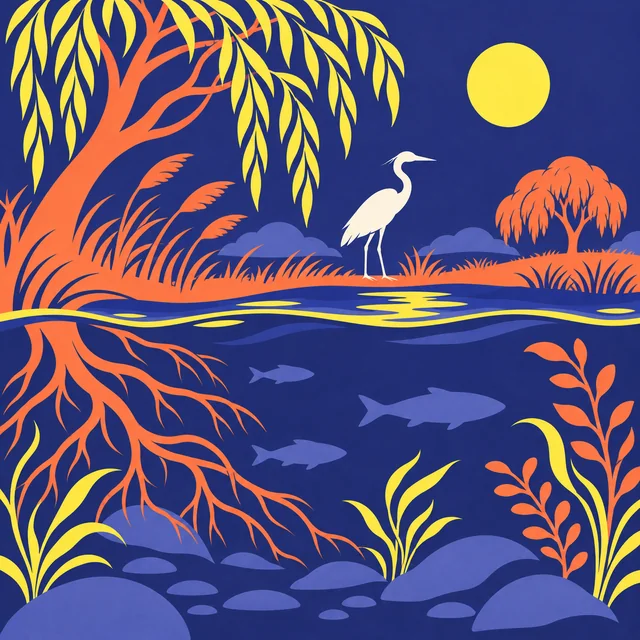
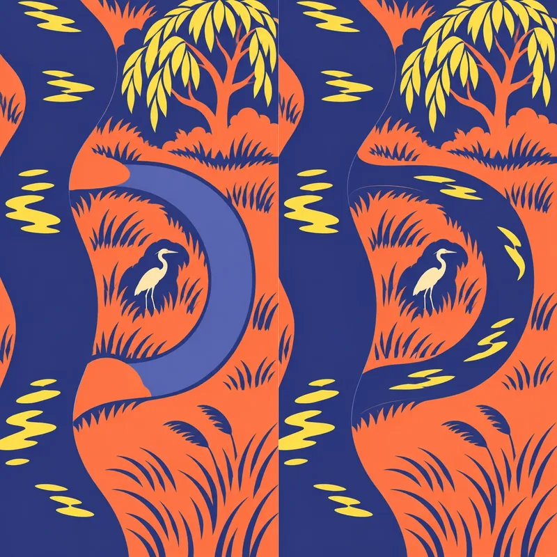
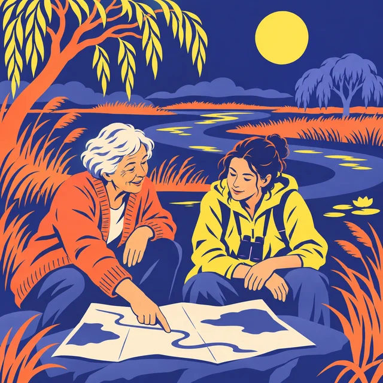
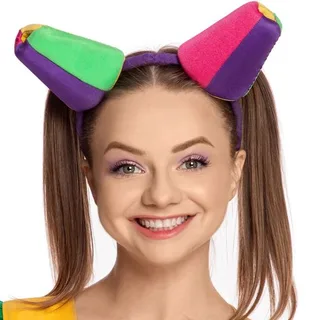

Coordonatorul inițiativei
Rechte der Natur e.V.
Asociația germană care coordonează inițiativa cetățenească europeană „Drepturi pentru Natură”, înregistrată de Comisia Europeană la 19 mai 2026.

Inițiativă Cetățenească Europeană
În România
Inițiativa noastră cetățenească europeană solicită o lege a Uniunii prin care orice ecosistem, de la un râu sau o pădure până la un munte sau o mare, să poată deveni persoană juridică, cu drepturi și cu oameni care să-l apere.
Dăm voce naturii
Cu cel puțin 1 milion de semnături strânse în 12 luni și cu pragul minim atins în cel puțin 7 țări, Comisia Europeană trebuie să răspundă oficial și să-și explice decizia.
5,9 % din pragul României
7,5 % din țintă
Colectarea se încheie la 13 octombrie 2027.
01 / Problema
Uniunea Europeană are legi solide de mediu: pentru habitate și specii, pentru păsări, pentru ape, pentru refacerea naturii, pentru evaluarea planurilor și a proiectelor, pentru răspunderea de mediu și pentru infracțiunile de mediu. Niciuna nu stabilește însă cine apără, în mod permanent, interesul unui ecosistem anume, la fiecare autorizație și în fiecare proces.
Organizațiile de mediu fac ce pot, dar au capacități limitate: nu pot urmări, pentru fiecare râu, lac sau pădure în parte, toate autorizațiile, planurile și procesele care le pot afecta. Când nimeni nu invocă legea la timp, prejudiciul se produce întâi și se constată abia după.
Pe Odra, după catastrofa din 2022, Comisia Europeană a trimis Poloniei, la 29 aprilie 2026, o scrisoare de punere în întârziere: normele existau, lipsea cine să le invoce constant.
Regulile există de zeci de ani. Lipsește cine să le invoce.
81 %
dintre habitatele protejate din Uniunea Europeană aveau, în perioada 2013–2018, o stare de conservare nesatisfăcătoare sau rea.
63 %
dintre râurile, lacurile și apele de coastă din Uniunea Europeană nu atingeau, în 2021, o stare ecologică bună.

„Natura are dreptul să fie recunoscută ca o ființă vie prin lege, să-i fie recunoscut dreptul de a exista și de a-și continua ciclurile vitale.”
02 / Precedente
Laguna Mar Menor, în Spania: o lege din 2022 i-a recunoscut personalitatea juridică, iar Curtea Constituțională a Spaniei a confirmat-o în 2024.
Organele ei s-au constituit abia în 2025. De aceea, în legea pe care o propunem, ecosistemul are un reprezentant interimar chiar din ziua desemnării.
268
de inițiative din toată lumea care dau drepturi naturii stau la baza propunerii noastre. 132 dintre ele sunt din Europa.
Din această cercetare vin cele 25 de lecții: fiecare regulă importantă din propunerea noastră răspunde unei probleme întâlnite deja.
1Laguna Mar Menor, Spania
Reprezentarea trebuie să existe din ziua desemnării.
În propunere: un reprezentant interimar, numit prin actul de desemnare.
2Mar Menor, Spania · India
Organele trebuie să poată decide fără acordul autorităților.
În propunere: autoritățile participă fără drept de vot și nicio categorie nu are drept de veto.
3Columbia · Ecuador
Drepturile fără finanțare și fără monitorizare rămân declarative.
În propunere: un fond al ecosistemului, finanțare de bază de la stat și un comitet științific.
4Lacul Erie, Statele Unite · Cáceres, Brazilia
Recunoașterea locală nu este suficientă.
În propunere: o lege la nivelul Uniunii; desemnarea nu poate fi retrasă ușor.
5Râul Yarra, Australia · râul Magpie, Canada
Un rol doar consultativ nu protejează.
În propunere: reprezentanții sunt parte în proceduri și pot merge în instanță.
6Râul Tavignanu, Franța · râul Odra, Polonia
Dreptul existent funcționează doar atunci când cineva îl invocă.
În propunere: reprezentanții participă la autorizări și primesc răspuns motivat la cererile lor.
7Gange și Yamuna, India
Riscul răspunderii pentru fenomene naturale face instanțele reticente.
În propunere: răspunderea pentru inundații sau secetă rămâne cea de dinainte de desemnare.
8Mar Menor, Spania
Instanțele interpretează restrictiv acțiunea populară.
În propunere: o listă explicită a celor care pot acționa în numele ecosistemului.
9Uniunea Europeană, 2003–2024
Accesul la justiție este unul dintre punctele cele mai disputate politic.
În propunere: reguli precise, limitate la ecosistemele desemnate, și un text separat pentru actele instituțiilor Uniunii.
10Râul Spree, Germania
Critica doctrinară trebuie întâmpinată direct: lacuna este de aplicare și de reprezentare, nu de norme.
În propunere: nicio obligație materială nouă; reprezentanții invocă legile care există deja.
11Bolivia · Bangladesh
Instituția și finanțarea ei trebuie create de aceeași lege.
În propunere: organele ecosistemului și finanțarea lor sunt prevăzute în același text.
12Amazonul columbian
Măsurile dispuse de instanță în sarcina statului nu se execută dacă nimeni nu urmărește aplicarea lor.
În propunere: organe care urmăresc aplicarea și rapoarte periodice.
13Râul Vilcabamba, Ecuador
Precauția are efect real când pârâtul trebuie să dovedească lipsa riscului.
În propunere: principiul precauției; instanța poate cere probele aflate la pârât.
14Orange County, Florida, Statele Unite
Nivelul superior poate anula recunoașterea de la nivelul inferior.
În propunere: o lege la nivelul Uniunii.
15Chile
Reformele maximaliste pot cădea în bloc.
În propunere: un act limitat la ecosistemele desemnate, aplicat pe etape.
16Râul Marañón, Peru · Te Urewera, Noua Zeelandă
Comunitățile care trăiesc din ecosistem sunt reprezentanții firești.
În propunere: localnicii și utilizatorii ecosistemului au locuri în organele lui.
17Panama
O lege-cadru are nevoie de acte concrete pentru ecosisteme anume.
În propunere: fiecare ecosistem este desemnat individual.
18Insulele Loyalty, Noua Caledonie (Franța) · Țările de Jos
Personalitatea juridică trebuie conferită de autoritatea competentă în materie de drept civil.
În propunere: personalitatea se dobândește de drept la desemnare, prin legea fiecărei țări.
19Erfurt, Germania · Polonia
Fără lege expresă, recunoașterea pe cale judiciară rămâne fragilă.
În propunere: drepturi și reprezentanți stabiliți prin lege.
20Râul Machángara, Ecuador
Măsurile dispuse de instanță trebuie să producă efecte și în timpul căilor de atac.
În propunere: măsurile de oprire produc efecte și pe durata apelului; instanța urmărește planul de refacere.
21Grant Township, Statele Unite
Protecția trebuie să îi cuprindă și pe avocați.
În propunere: protecție împotriva proceselor abuzive, inclusiv pentru avocați și experți; cheltuieli plafonate.
22Eijsden-Margraten și Amsterdam, Țările de Jos
Cererea locală are nevoie de un canal juridic.
În propunere: autoritățile locale, organizațiile de mediu și grupurile de locuitori pot cere desemnarea, cu răspuns motivat.
23Râurile Odra și Sambre
Ecosistemele comune au nevoie de notificare transfrontalieră.
În propunere: reprezentanții ecosistemului din țara vecină sunt anunțați despre procedurile care îl pot afecta.
24Mar Menor, Spania
Participarea la procesul penal trebuie să fie efectivă.
În propunere: reprezentanții sunt informați la timp și ascultați înainte de orice acord; despăgubirile intră în fondul ecosistemului.
25Râul Odra, Polonia
Obiecțiile instituțiilor de specialitate trebuie întâmpinate în text.
În propunere: răspunsuri în text despre răspunderea pentru inundații, termenele de contestare și criteriile de alegere.
Legea rezistă mai bine decât actele locale.
Drepturile din constituții și din hotărâri judecătorești (Ecuador, Columbia, Peru) și din legi naționale (Spania, Noua Zeelandă, Panama, Uganda) au rezistat în mare parte. Actele locale din Statele Unite și actul provincial din Insulele Loyalty au fost anulate sau înlăturate.
În propunere: o directivă a Uniunii, iar personalitatea juridică vine prin lege.
Natura câștigă deja procese.
În Ecuador și în Peru, instanțele au dat câștig de cauză râurilor și pădurilor în șapte procese, de la pădurea Los Cedros la râul Marañón. Procesele pierdute, din Statele Unite și din Elveția, nu aveau în spate o lege: se sprijineau pe acte locale sau tribale ori doar pe interpretarea judecătorilor.
În propunere: o lege a Uniunii, aplicată în fiecare țară, cu oameni stabiliți prin lege care pot merge în instanță pentru natură.
Drepturile speciilor rămân fragile.
Apar mai ales în acte locale și hotărâri; singurul act subnațional pentru specii verificat de o instanță superioară (Insulele Loyalty) a fost înlăturat pentru lipsă de competență.
În propunere: drepturi pentru ecosisteme întregi, nu pentru specii izolate, printr-un act al Uniunii.
Reprezentanții Deltei ar participa la autorizarea proiectelor care o pot afecta și ar putea contesta în instanță deciziile care îi încalcă drepturile. Despăgubirile ar merge la refacerea Deltei.
Se poate. Spania a făcut-o deja pentru o lagună.
03 / Propunerea
O directivă a Uniunii Europene, adică o lege pe care fiecare țară o preia în legea ei, prin care ecosistemele desemnate devin persoane juridice, cu drepturi proprii și cu reprezentanți care le pot apăra.
Poate fi desemnat orice ecosistem, de exemplu un râu, un lac, o pădure, o zonă umedă, o deltă, o lagună, o pajiște, o turbărie sau o zonă de coastă ori de mare.

01
De la data desemnării, ecosistemul este persoană juridică: are drepturi proprii și poate sta în justiție prin reprezentanții lui.

02
Ecosistemul desemnat are dreptul să existe, iar autoritățile trebuie să țină seama de acest drept în planuri, programe și autorizări.

03
Ecosistemul își poate regenera biocapacitățile și ciclurile vitale.

04
Când a fost degradat, ecosistemul are dreptul de a fi refăcut.

05
Localnici, organizații de mediu și utilizatori ai ecosistemului îl reprezintă în fața autorităților și în instanță, sprijiniți de un comitet științific.
Europa are deja legi bune de mediu. Cu propunerea noastră, ele vor fi respectate mai bine, pentru că fiecare ecosistem desemnat va avea oameni care să ceară aplicarea lor.

Cum ar arăta în România
Râul Vâlsan este singurul loc din lume unde trăiește aspretele, cel mai rar pește de apă dulce din Europa.
150
de aspreți găsiți la monitorizarea din 22–25 septembrie 2026, pe aproximativ 10 km de râu
76 %
dintre ei, adică 114, trăiesc pe un singur sector de doar 450 de metri
Acest nucleu al populației este prins ca între ciocan și nicovală.
Cu drepturi pentru natură
Desemnat, râul ar avea un organ care participă la procedurile privind barajul, priza și stația, poate cere în instanță respectarea debitului și refacerea, iar autorizațiile care îl pot afecta ar fi reexaminate în cel mult trei ani.
O victorie care a durat peste 20 de ani
Mai mult de 20 de ani, oamenii din Roșia Montană, apoi o țară întreagă, au apărat munții și satele de cea mai mare mină de aur la suprafață din Europa, cu cianuri.
3
sate ar fi fost rase
4
vârfuri de munte ar fi fost distruse
12 000
de tone de cianuri pe an
Cu drepturi pentru natură
Munții și apele de la Roșia Montană ar fi putut avea de la început apărători stabiliți prin lege: parte în fiecare autorizare și cu drept de a merge în instanță în numele lor, fără să depindă doar de puterea oamenilor care au ieșit în stradă.
Lupta ar fi fost, probabil, mai scurtă și ar fi adus mai puțină suferință.

1
Alegerea
Situat integral sau parțial în situri Natura 2000, într-o stare nefavorabilă și sub presiuni documentate; poate desemna oricând și altele. Autoritățile locale, organizațiile de mediu și grupurile de locuitori pot cere desemnarea. Dacă experți independenți confirmă criteriile pentru un ecosistem din Natura 2000, statul trebuie să-l desemneze, iar instanța îl poate obliga.
2
Persoana juridică
Devine persoană juridică la desemnare. Are dreptul să existe, să se regenereze și să fie refăcut; conținutul drepturilor se stabilește prin indicatori științifici și prin obligațiile care există deja în lege. Proprietatea asupra terenurilor și apelor rămâne aceeași.
3
Reprezentanții
Un organ de reprezentare, o comisie de monitorizare și un comitet științific, în cel mult 3 luni; până atunci, un reprezentant interimar. Votează localnici, organizații de mediu și utilizatori; autoritățile participă fără vot.
4
Vocea în decizii
Organul este parte în evaluările de mediu, în autorizările pentru ape și în planurile care pot afecta ecosistemul. E anunțat cel târziu odată cu publicul și are cel puțin 30 de zile să intervină.
5
Instanța
Organul contestă deciziile care îi încalcă drepturile; după o cerere prealabilă, pot acționa și organizațiile de mediu, autoritățile locale și grupurile de locuitori. Instanța poate opri încălcarea și poate dispune refacerea; când refacerea nu e posibilă, despăgubiri, care intră în fondul ecosistemului.
Textul legii cerute este deja scris, ca model.
04 / Drumul până la lege
Pașii, în ordine, de la semnăturile noastre până la legea din fiecare țară: cine decide la fiecare pas și cât durează.
Strângem 1 milion de semnături, cu pragul minim atins în cel puțin 7 țări. În România avem nevoie de cel puțin 23 760.
Cât durează: 12 luni, de la 13 octombrie 2026
Țările verifică semnăturile. Comisia Europeană se întâlnește cu organizatorii inițiativei, Parlamentul European organizează o audiere publică, în care organizatorii își prezintă inițiativa, iar Comisia răspunde oficial.
Cât durează: predarea, verificarea și depunerea, cel mult 9 luni; răspunsul, cel mult 6 luni
Dacă hotărăște să acționeze, Comisia scrie propunerea de lege. I-am pregătit deja un model concret: textul unei directive și al unui regulament care o completează.
Cât durează: decide Comisia
Dezbat, modifică și adoptă directiva împreună.
Cât durează: nu există un termen fix
Fiecare țară preia directiva în legea ei (transpunere) și desemnează, până la termenul de transpunere, cel puțin un ecosistem. Pentru România am pregătit un model de lege.
Cât durează: 24 de luni
Trebuie însă să răspundă oficial inițiativei noastre și să-și explice decizia. De aceea solicităm în paralel Parlamentului European o rezoluție prin care să ceară Comisiei legea. Proiectul rezoluției este pregătit.
| Când | Ce se întâmplă |
|---|---|
| 13.10.2026–13.10.2027 | Colectarea semnăturilor |
| ianuarie–septembrie 2027 (ținta) | Prima cerere a Parlamentului European: un grup de deputați pornește procedura, apoi urmează raportul și votul în plen |
| cel târziu 13.7.2028 | Țările verifică semnăturile, apoi inițiativa este depusă la Comisie |
| cel târziu în septembrie 2028, dacă votul are loc în septembrie 2027 | Comisia răspunde în 3 luni; apoi propune legea în cel mult un an sau o trece în programul de lucru pe anul următor, ori își motivează refuzul |
| cel târziu 13.10.2028 | Audierea publică în Parlamentul European |
| cel târziu 13.1.2029 | Răspunsul Comisiei la inițiativă; după audiere, Parlamentul poate repeta cererea, ca rezervă |
| după propunere, fără termen fix | Parlamentul European și Consiliul adoptă legea; apoi fiecare țară o transpune în 24 de luni |
| 31.10.2029 | Se încheie mandatul actualei Comisii |
„(ținta)” înseamnă planul nostru, care depinde de calendarul Parlamentului; celelalte date sunt termenele maxime din textele oficiale.
Surse pentru calendar: Regulamentul (UE) 2019/788, art. 3, 8 și 12–15 · TFUE, art. 225 și 231 · Regulamentul de procedură al Parlamentului European, art. 47 și 228 · Acordul-cadru dintre Parlament și Comisie din 28 aprilie 2026, pct. 18 · Deciziile (UE) 2023/2061 și 2024/2997 ale Consiliului European · propunerea de directivă, art. 27.
Comisia Europeană răspunde inițiativei noastre și hotărăște dacă propune directiva: numai ea poate propune o lege a Uniunii.
Parlamentul European, cu 720 de deputați aleși, poate cere Comisiei directiva, printr-o rezoluție, și o votează.
Consiliul Uniunii Europene, adică miniștrii celor 27 de țări, o votează împreună cu Parlamentul European.
România și celelalte 26 de țări preiau directiva în legea lor și desemnează ecosistemele.
Surse: Tratatul privind Uniunea Europeană, art. 16 și 17 · TFUE, art. 225 și 294 · Regulamentul (UE) 2019/788, art. 3, 8 și 12–15 · Regulamentul delegat (UE) 2024/1082 · Decizia (UE) 2023/2061 a Consiliului European · propunerea de directivă, art. 20 și 27.
Primul pas este al nostru: semnăturile.
05 / Întrebări
Pentru că legile spun ce trebuie atins, dar nu cine apără, permanent, un ecosistem anume. Comisia estimează costul neaplicării depline a legislației de mediu la cel puțin 180 de miliarde EUR pe an. Directiva nu adaugă obligații noi: adaugă cine să ceară aplicarea celor existente.
Fiecare ecosistem desemnat are un organ de reprezentare, care îl apără în fața autorităților și în instanță, și o comisie de monitorizare, care urmărește ce se întâmplă cu el. În ele intră, echilibrat, trei categorii de oameni: localnici, reprezentanți ai organizațiilor de mediu și reprezentanți ai celor care trăiesc din ecosistem, precum pescarii, fermierii sau operatorii de turism. Nicio categorie nu poate decide singură. Primăriile și ceilalți aleși pot participa, dar nu votează. În România, potrivit legii-model, localnicii se trag la sorți dintre voluntari, în ședință publică, iar ceilalți sunt propuși de organizațiile lor. Mandatul e de patru ani, iar fiecare membru își publică declarația de interese. Un comitet de oameni de știință independenți, din universități și institute de cercetare, le dă avize.
Acolo există deja date științifice, obiective de conservare și administratori, deci instrumentul poate fi testat repede. Autoritățile locale, organizațiile de mediu și grupurile de locuitori pot cere desemnarea oricărui ecosistem, inclusiv din afara Natura 2000.
Autoritatea trebuie să răspundă în cel mult șase luni; tăcerea se consideră refuz și poate fi contestată. Dacă experți independenți confirmă că un ecosistem din Natura 2000 este într-o stare nefavorabilă și sub presiuni documentate, statul trebuie să-l desemneze în cel mult șase luni, iar instanța îl poate obliga. Până atunci, se pot cere instanței măsuri provizorii.
Autoritățile locale, organizațiile de mediu sau un grup de locuitori depun o cerere la autoritatea pentru protecția mediului, cu perimetrul propus. Perimetrul se trasează după cum funcționează ecosistemul, de exemplu un râu cu albia și lunca lui, nu după hotare de proprietate sau administrative. Autoritatea trece cererea într-un registru public, cere avizul unor experți independenți și decide în 30 de zile. Dacă avizul e favorabil pentru un ecosistem din Natura 2000, Guvernul adoptă hotărârea de desemnare în cel mult 60 de zile, iar perimetrul nu poate fi mai mic decât cel din aviz. Proprietatea nu se schimbă.
Regimul ariei rămâne același, iar administratorul o gestionează în continuare. Organul ecosistemului devine parte în evaluările de mediu, în planurile de management și în măsurile de conservare.
Statul asigură fiecărui ecosistem desemnat o finanțare de bază stabilă, care acoperă cel puțin cheltuielile membrilor. Despăgubirile obținute în instanță intră într-un fond separat, folosit numai pentru refacere, monitorizare, informarea publicului, funcționarea organelor și procese. Fondul nu poate primi donații de la cei ale căror activități pot afecta ecosistemul.
Schimbările instituționale sunt documentate: în Noua Zeelandă, legea pentru râul Whanganui a dat comunităților un rol în deciziile despre râu; la Mar Menor, laguna are reprezentanți în instanță. Efectele asupra stării ecosistemelor nu au fost încă măsurate riguros nicăieri. De aceea, directiva cere rapoarte periodice și o evaluare care compară ecosistemele desemnate cu altele asemănătoare, nedesemnate.
„Statul recunoaște dreptul oricărei persoane la un mediu înconjurător sănătos și echilibrat ecologic.”
Constituția României, articolul 35 alineatul (1)
06 / Oamenii
Coordonatorul inițiativei
Asociația germană care coordonează inițiativa cetățenească europeană „Drepturi pentru Natură”, înregistrată de Comisia Europeană la 19 mai 2026.
Partenerul din România
Partenerul din România al inițiativei. Se ocupă de strângerea semnăturilor în România.
Rețeaua inițiativei are organizații partenere în 17 state membre.
 De invitat
De invitat De invitat
De invitat De invitat
De invitat De invitat
De invitat De invitat
De invitat De invitat
De invitat De invitat
De invitat De invitat
De invitat De invitat
De invitat De invitat
De invitat De invitat
De invitat De invitat
De invitat De invitat
De invitat De invitat
De invitat De invitat
De invitat De invitat
De invitat De invitat
De invitat De invitat
De invitat De invitat
De invitat De invitat
De invitat De invitat
De invitat De invitat
De invitat De invitat
De invitat De invitat
De invitat De invitat
De invitat De invitat
De invitat De invitat
De invitat De invitat
De invitat De invitat
De invitat De invitat
De invitat De invitat
De invitat De invitat
De invitat De invitat
De invitat De invitat
De invitat De invitat
De invitat De invitat
De invitat De invitat
De invitat De invitat
De invitat De invitat
De invitat De invitat
De invitat De invitat
De invitat De invitat
De invitat De invitat
De invitat De invitat
De invitat De invitat
De invitat De invitat
De invitat
astronaut

campioană olimpică la maraton

actriță, regizoare și scenaristă
vicepreședinte, Consiliul Național al Elevilor
înotător, campion olimpic
De invitatfost tenismen, campion de Grand Slam la dublu
De invitatfotograf și cineast de natură
De invitatcântăreață
De invitatviolonist
De invitatprezentatoare de televiziune
De invitatcălugăr budist, scriitor și fotograf
De invitatrealizatorul documentarelor Wild Carpathia
De invitatspeolog și jurnalist
De invitatcampioană de Grand Slam la tenis
De invitatregizor, câștigător al Palme d’Or
De invitat„Persoanele fizice și juridice au îndatorirea de a proteja și a ameliora mediul înconjurător.”
Constituția României, articolul 35 alineatul (3)
Până la 13 octombrie 2027
Semnarea se face în sistemul de colectare al Comisiei Europene și durează cam un minut.
Cetățenii Uniunii care au vârsta de vot pentru alegerile europene, oriunde locuiesc. Pentru cetățenii români, vârsta minimă este 18 ani. Fiecare persoană semnează o singură dată.
Cetățenii români completează prenumele și numele complete și un număr de identificare: codul numeric personal ori numărul cărții de identitate sau al pașaportului.
Formularul oficial este administrat de Comisia Europeană, care este și operatorul datelor din sistemul central. Declarațiile se distrug cel târziu la 13 iulie 2028.
Natura nu poate semna. Tu poți.
Semnează